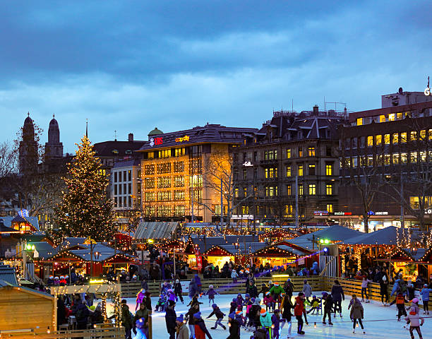
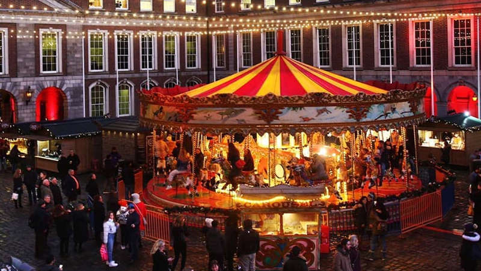
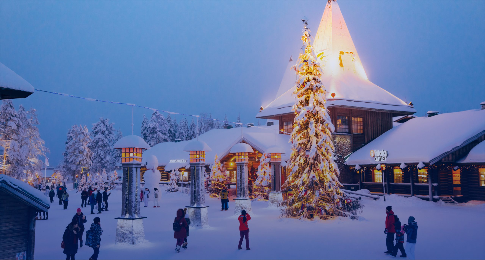
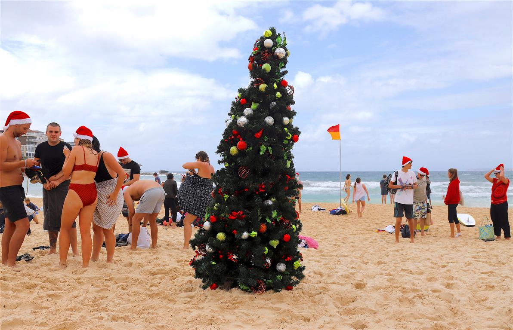
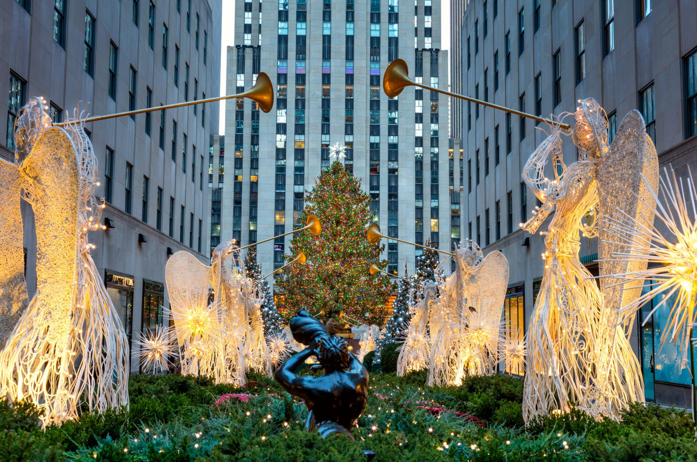

Christmas Eve........
Best Christmas Celebration in the world
All those famed chocolate-box attractions -- mountains, snow, cobbled streets -- make Switzerland extra-appealing come Christmas. Zurich wins our vote for its oodles of Christmas markets (don't miss the one inside the train station), guided Christmas-themed city strolls, and the enchanting all-singing Christmas tree that comes alive on Werdmuhleplatz. On a tiered triangular stage covered in assorted greenery and fairy lights, a choir of local youngsters sweetly delivers Christmas carols.
With a cracking sense of humor, the staunchly Catholic Irish have a few novel ways to honor Christmas. The most eyebrow-raising is a morning swim on the 25th at the Forty-Foot sea-water pool. In the lead-up to the big day there's life aplenty on Dublin's streets and the craic flows. There's the 12 Days of Christmas Market at the Docklands, cheesy pantos, Christmas lights, ice skating, and markets and seasonal cheer in Temple Bar. Don't miss carols at St Patrick's Cathedral.
When too much Santa is never enough, rug up and head north to Finland's Arctic Circle. The jolly man in the red suit is this neighborhood's most famous resident, and round these parts they milk him for all he's worth. Still, the deep wintertime snow and reindeer-dotted forests go a long way toward off setting the touristy atmosphere, though there's an amusement park called Santa Park not far from the village. You'll need deep pockets, but you'd have to be pretty Grinch-like to leave without a smile.
Hit the beach to talk turkey with fellow travellers. Bondi is the antithesis of northern-hemisphere Christmas cliches: sun, sand and surf replace snow and fairy lights. Come 25 December the beach acts as a magnet for backpackers a long way from home, who celebrate alongside other "Christmas orphans." Bands and DJs rock the Pavilion, everyone checks out everyone else, and a festive atmosphere prevails. Items you may not normally take to Christmas dinner: swimsuit, sunscreen, sunhat.
Surely you know what Christmas in the Big Apple looks like, thanks to countless movies: Christmas lights, cheesy muzak, preferably a light dusting of snow. The world's tallest Christmas tree is lit at the Rockefeller Center in early December. Ice skating below it is a must for wintertime visitors, as is checking out the window displays in New York's largest department stores. Finish with a New York Ballet performance of "The Nutcracker" for a Christmas straight out of central casting.
